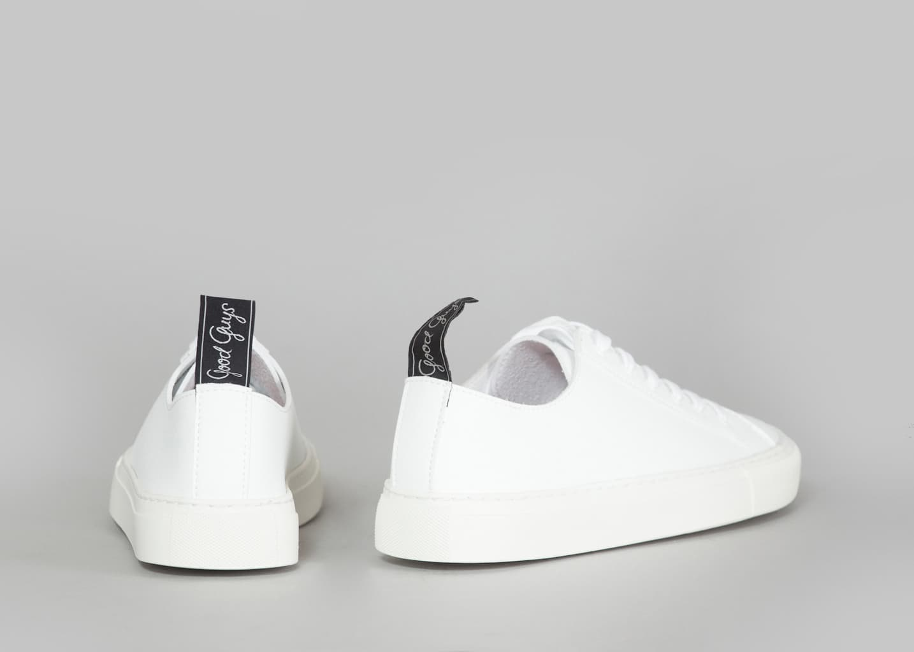

Everyone wants a pair of Common Projects, but not all are willing to put an animal’s life on the line for some. I’ve done a lot of research on a vegan alternative to these shoes but have only had luck in stores such as ASOS, H&M, and Zara. While their synthetic leather options are a great alternative to CP, they are most likely unintentionally vegan and of lesser quality. After researching some more, I came across a brand that is doing exactly what I had been searching for. Good Guys has created an intentionally all-vegan white sneaker which is a great alternative to the infamous Achilles Low.
Shop Now The Samo sneaker uses vegan leather and a natural rubber sole to create a durable, animal-free shoe. Made of microfiber, the vegan leather is of the highest quality, far exceeding the stipulations of the UNE-EN ISO 20344:2004 standard (R-09119381). The Samo sneaker is sweatshop-free, manufactured in Portugal and sells for €99 ($117), a lot less than the Achilles Low, which sells for $400.